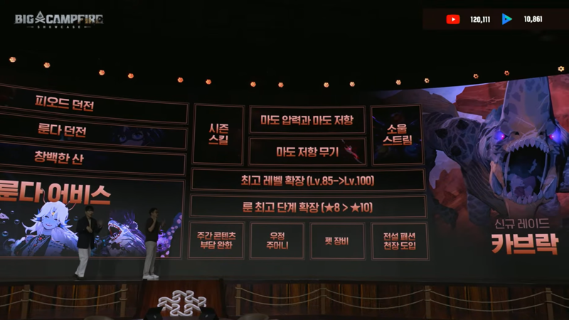

마비노기 모바일 펫 장비 세트효과, 전설이 유독 좋은 이유
지난번 마비노기 모바일 시즌2 '빛과 어둠' 총정리에서 살짝 스치듯 언급만 하고 넘어간 게 하나 있는데요, 바로 펫 장비예요. 이번 시즌에 새로 생긴 장비 슬롯인데, 등급이 오르면 정확히 뭐가 달라지는지, 그중에서도 왜 다들 전설 등급을 노려야 한다고 말하는지를 오늘은 좀 더 파고들어 볼게요.
이 자리에서 시즌2 신규 콘텐츠와 함께 펫 장비도 처음 소개됐어요
이미지: 인벤(inven.co.kr) 게재분
기본 이야기
펫 장비, 정확히 뭐가 새로 생긴 거예요?
결론부터 정리하면, 펫 장비는 이번 시즌부터 반려동물인 펫한테 직접 입힐 수 있게 된 새로운 장비예요. 지금까지 펫은 그냥 데리고 다니면서 채집이나 전투를 거드는 정도였는데, 이제는 펫한테도 캐릭터처럼 장비 슬롯이 생긴 셈이죠. 얻는 길은 두 가지예요. 직접 만들거나(제작), 이미 만들어진 걸 거래소에서 사 오면 됩니다. 둘 다 인벤·게임메카가 함께 짚어준 부분이라 이 정도는 믿으셔도 괜찮아요.
정리하면 만들 재료를 직접 모으느냐, 아니면 완제품을 거래소 시세대로 사 오느냐의 차이인데, 어느 쪽이 더 유리한지는 재료값·시세가 아직 다 안 나와서 지금은 판단하기 일러요.

쇼케이스 발표 화면을 직접 확인해 보니 '펫 장비'가 신규 항목 목록에 또렷하게 올라와 있더라고요
이미지: 마비노기 모바일 공식 쇼케이스 방송 화면
등급 비교
등급별로 뭐가 다른가요 — 고급부터 전설까지
펫 장비도 이 게임의 아이템 희귀도 체계를 그대로 따라가요. 2025년 9월 25일 기준 등급 순서는 고급 → 희귀 → 엘리트 → 유니크 → 에픽 → 전설 → 신화, 이렇게 7단계인데요, 등급별로 기본 능력치가 붙는 건 "고급부터 전설까지"예요. 아래처럼 정리해 봤어요.
| 등급 | 기본 능력치 | 세트효과 |
|---|---|---|
| 고급 | 있음 | 없음 |
| 희귀 | 있음 | 없음 |
| 엘리트 | 있음 | 없음 |
| 유니크 | 있음 | 없음 |
| 에픽 | 있음 | 없음 |
| 전설 | 있음(가장 높은 값) | 있음 (펫 종류·장비 종류 일치 시) |
| 신화 | 확인 안 됨 | 확인 안 됨 |
※ 등급별 정확한 수치와 세트효과 상세는 아직 공식적으로 공개 전이에요. 지금 확인된 건 "고급부터 전설까지 기본 능력치가 붙는다"는 정도예요.
표만 보면 그냥 등급이 오를수록 좋아지는구나 싶으실 텐데, 진짜 눈여겨봐야 할 건 마지막 줄이에요. 다른 등급은 전부 '기본 능력치' 칸만 채워져 있는데, 전설은 지금까지 공개된 등급 중 세트효과가 확인된 유일한 등급이거든요. 신화 등급은 세트효과는커녕 기본 능력치조차 아직 확인되지 않았고요. 그러니까 지금 시점에서는 전설이 펫 장비 안에서 사실상 제일 위 등급인 셈이에요.
· 🌿 ·
아직 공개 전인 것
등급별 정확한 수치는 아직 공개 전이에요
"기본 능력치가 붙는다"는 구조는 확인됐지만, 등급마다 정확히 얼마씩 붙는지·전설 세트효과가 정확히 뭔지는 아직 어디에도 안 나와 있어요. 나무위키 마비노기 모바일 아이템 문서도 오늘 기준으로 직접 들어가 봤는데, 펫 장비나 세트효과 항목 자체가 아직 만들어져 있지 않더라고요. 지금은 "구조가 이렇다"까지만 확실한 단계예요.
저도 정확한 수치가 궁금해서 찾아봤는데, 아직은 다들 구조만 확인된 상태더라고요. 수치가 뜨면 이 글에도 바로 채워둘게요.
왜 전설인가
그럼 왜 다들 전설 등급을 노리라고 할까요?
수치는 안 나왔지만, 구조만 놓고 봐도 전설을 노려야 하는 이유는 꽤 또렷해요. 이유는 크게 두 가지로 나눠서 볼 수 있어요.
첫째, 지금까지 공개된 등급 중 전설은 세트효과가 확인된 유일한 등급이에요. 다른 등급은 등급이 오를수록 기본 능력치만 따라 오르는데, 전설은 여기에 조건이 맞으면 추가 효과까지 하나 더 얹어주는 구조예요. 등급을 올리는 노력이 전설에서만 한 겹 더 보상받는 셈이죠.
둘째, "등급이 오르면 진짜로 세진다"는 원칙이 이 게임에서 낯선 얘기가 아니에요. 펫 자체의 공식 가이드를 보면, 펫 고유 스킬은 에픽 희귀도부터 쓸 수 있고 전설 희귀도에 닿으면 그 스킬이 한 번 더 강화된다고 나와 있어요. 거기다 펫의 공식 가이드에는 "펫의 희귀도가 상승하면 펫의 최대 레벨도 같이 상승합니다"라는 문구도 있어요 — 등급이 곧 성능이라는 이야기죠. 펫이든 펫 장비든, 이 게임에서는 등급판이 그냥 장식이 아니라 실제 성능 차로 이어진다는 원칙이 똑같이 적용되는 셈이에요.
결국 전설 등급은 ①기본 능력치도 가장 높고 ②거기다 지금까지 공개된 등급 중 세트효과까지 확인된 유일한 등급이에요. 이 게임의 다른 시스템들도 다 '전설에서 한 번 더 좋아진다' 패턴이라, 펫 장비도 같은 원칙을 그대로 따라간다고 보시면 될 것 같아요.
세트효과 조건
세트효과 조건, "종류가 일치한다"는 게 무슨 뜻일까요
세트효과가 발동하는 조건은 "펫 종류와 장비 종류가 일치할 경우"라고 확인됐어요. 다만 여기서 말하는 '종류'가 정확히 어떤 분류 기준인지—펫 개체별인지, 계열별인지, 아니면 장비 부위별인지—는 아직 구체적으로 풀리지 않았어요. 지금 단계에서 억지로 짐작해서 적기보다는, 이 부분은 "아직 공식적으로 자세히 공개되지 않았다"로 남겨둘게요.
이런 세부 조건은 보통 실제로 장비를 만들거나 거래소에 매물이 풀리는 순간 커뮤니티에서 제일 먼저 확인되더라고요. 그때까지는 조급해하지 않아도 될 것 같아요.
지금 할 일
지금 시점에서 뭘 준비해두면 될까요
정확한 수치가 안 나온 지금, 무리해서 완벽한 세팅을 맞추려 하기보다는 준비할 수 있는 것부터 챙겨두는 게 낫다고 봐요.
- 제작 재료 — 어떤 재료가 필요한지는 게임 내 제작창에서 직접 확인하고 미리 모아두기
- 거래소 시세 — 펫 장비가 매물로 풀리기 시작하면 등급별 가격대부터 눈여겨보기
- 내 펫의 희귀도 — 승급으로 펫 자체 희귀도부터 올려두면, 장비까지 갖췄을 때 시너지가 더 클 것
- 세트효과 조건 — 공식 공지나 패치노트로 자세한 조건이 나오면 그때 다시 맞춰도 늦지 않음
서두르지 않아도 되는 이유가 하나 더 있어요. 세트효과 조건이 아직 다 안 나온 상태에서 미리 등급만 맞춰봐야, 정작 종류가 안 맞으면 세트효과를 못 받을 수도 있거든요. 그러니까 지금은 재료·시세·펫 희귀도처럼 "언제 조건이 나와도 손해 안 볼 준비"만 해두고, 세부 조건은 공개된 뒤에 맞추는 순서가 더 안전해요.
결국 지금 할 수 있는 건 기반을 다져두는 정도예요. 정확한 조건은 공식 정보가 더 나온 뒤에 챙겨도 늦지 않으니까요.
마비노기 모바일 펫 장비는 지금까지 공개된 정보로는 세트효과가 붙는 게 전설 등급부터라, 지금 기준으로는 전설을 목표로 삼는 게 가장 합리적인 선택이에요. 등급별 세부 수치와 세트효과 상세는 아직 공식적으로 공개 전이라, 저희도 재료랑 시세부터 천천히 지켜보면서 준비해 보려고요. 더 자세한 정보가 나오면 그때 이 글에 더 깊이 채워 볼게요.